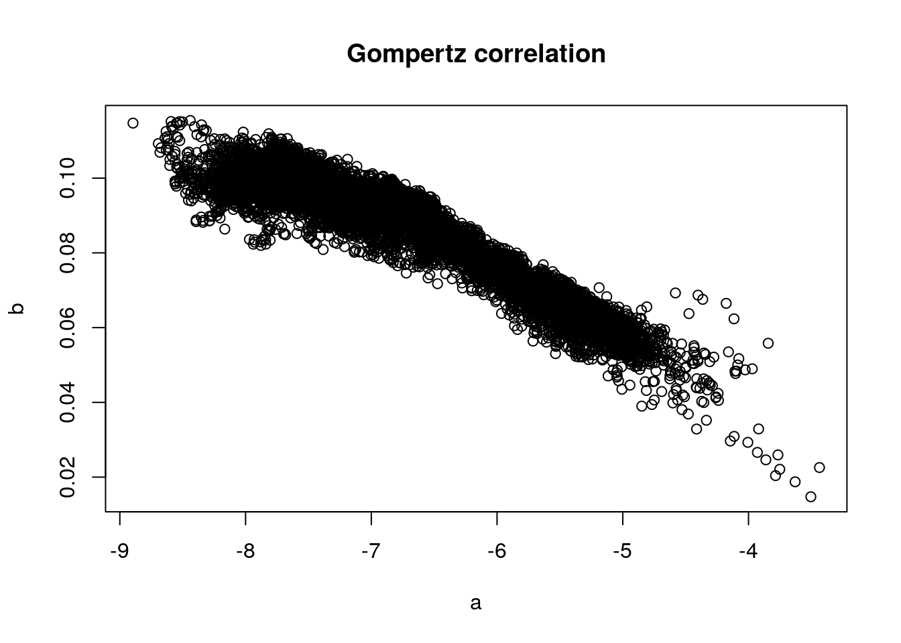
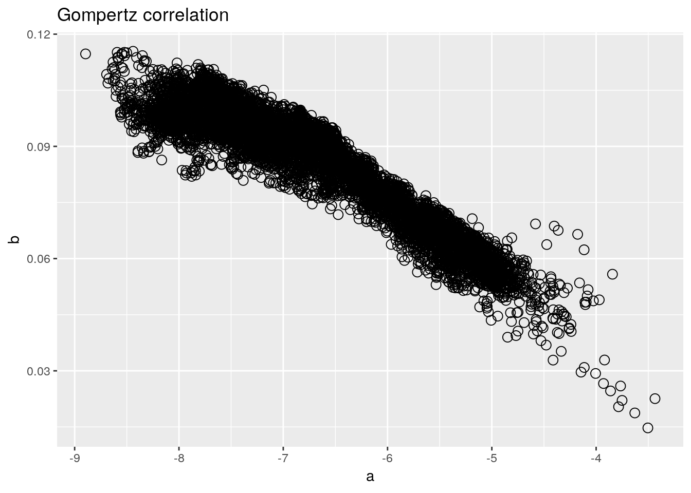
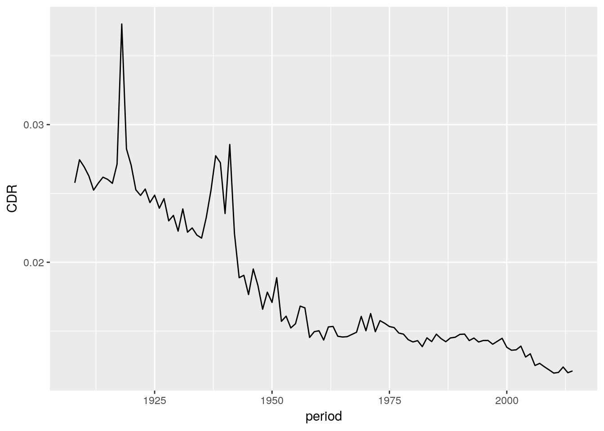

2 What is tidy R?
2.1 tidy R vs. base R
The Gompertz Law describes the exponential relationship between age and mortality rate in human populations. Its two parameters \(a\) and \(b\) describe the overall mortality level and the relative rate of mortality inrease over age. It is well known that both parameters correlate with each other. The code below demonstrates this co-variance by fitting the Gompertz equation to Swedish birth cohorts and plotting the parameter estimates against each other.
\[ \mu(x) = ae^{bx} \]
# load data
load('data/hmd/hmd_counts.RData')
# select ages 30 to 80, drop total counts, drop NAs
hmd_sub <-
na.omit(subset(hmd_counts, age >= 30 & age < 80 & sex != 'Total'))
# split the data by sex, country and year
hmd_split <-
split(hmd_sub, list(hmd_sub$sex, hmd_sub$country, hmd_sub$period),
drop = TRUE)
# run a linear regression on each subset
hmd_regress <-
lapply(hmd_split,
function (lt) glm(round(nDx, 0) ~ I(age-30) + offset(log(nEx)),
family = 'poisson', data = lt))
# extract the coefficients from each regression model
hmd_coef <- t(sapply(hmd_regress, coef))
# plot a versus b coefficients
plot(x = hmd_coef[,1], y = hmd_coef[,2],
main = 'Gompertz correlation', xlab = 'a', ylab = 'b')
Here’s how I would write the same program today, using the tidyverse.
library(tidyverse)
# load data
load('data/hmd/hmd_counts.RData')
hmd_counts %>%
# select ages 30 to 80, drop total counts
filter(age >= 30, age < 80, sex != 'Total') %>%
# drop NAs
drop_na() %>%
# for each period...
group_by(period, country, sex) %>%
# ...run a Poisson regression of deaths versus age
do(lm = glm(round(nDx, 0) ~ I(age-30) + offset(log(nEx)),
family = 'poisson', data = .)) %>%
# extract the regression coefficients
mutate(a = coef(lm)[1], b = coef(lm)[2]) %>%
# plot a versus b coefficients and label with year
ggplot() +
geom_point(aes(x = a, y = b), shape = 1, size = 3) +
labs(title = 'Gompertz correlation')
What are the differences?
In base R we stores intermediate results often.
In tidy R a single data pipeline often gets us from raw data to finished result.
In base R data structures change often.
In tidy R the dataframe is the most important data structure.
In base R we have to use various indexing styles.
In tidy R we use a single indexing style.
In base R important information is sometimes stored in row names.
In tidy R all information exists in the form of data frame columns.
2.1.1 Excercise: tidy R vs. base R
- Discuss the differences.
2.2 First steps in tidy R
This is the script we developed during the first lecture.
Everything starts with a dataframe.
library(tidyverse)
load('data/hmd/hmd_counts.RData')
hmd_counts %>%
arrange(country, sex, period, age)## # A tibble: 1,304,694 x 7
## country sex period age nx nDx nEx
## <chr> <chr> <int> <int> <int> <dbl> <dbl>
## 1 AUS Female 1921 0 1 3842. 64052.
## 2 AUS Female 1921 1 1 719. 59619.
## 3 AUS Female 1921 2 1 330. 57126.
## 4 AUS Female 1921 3 1 166. 57484.
## 5 AUS Female 1921 4 1 190. 58407.
## # ... with 1.305e+06 more rowsSplit-apply-combine is such a common data analysis pattern.
summarise() can work with base R functions that take a vector as input and return a scalar (a single value) as output. If you work with a function that returns a small vector (like range()) you must make sure to subset the output of that function to a scalar.
counts <-
hmd_counts %>%
arrange(country, sex, period, age) %>%
filter(age >= 30, sex == 'Total') %>%
drop_na() %>%
group_by(country) %>%
summarise(min = range(period)[1],
max = range(period)[2])We can write a pipe end-to-end, from raw data, to finished plot, without ever saving the results. It is important to know how your data looks like at each stage in the pipe. You can write data %>% View() to get that information.
hmd_counts %>%
arrange(country, sex, period, age) %>%
filter(age >= 30, sex == 'Total') %>%
drop_na() %>%
group_by(country, period) %>%
summarise(D = sum(nDx), E = sum(nEx)) %>%
mutate(CDR = D/E) %>%
filter(country == 'ESP') %>%
ggplot() +
geom_line(aes(x = period, y = CDR))